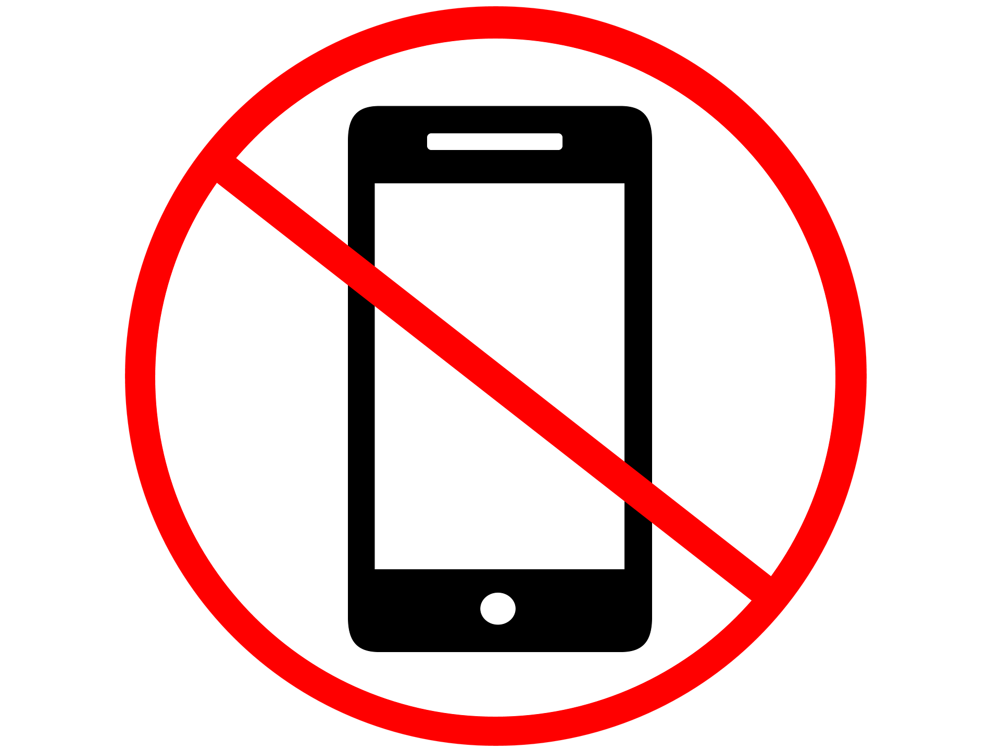
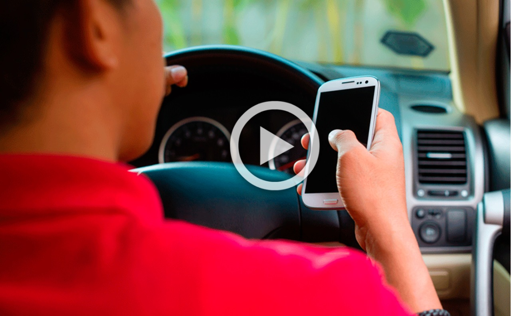

MOST OF YOUR ALERTS COME FROM USING YOUR PHONE WHILE DRIVING
Transporting other human beings in your vehicle is a tremendous responsibility, on that many young drivers take lightly. Sending or reading a text message while driving puts your passengers’ lives at a significantly higher risk of being involved in an accident while riding in your vehicle.
10 Pragmatic Reasons That Will Make You Stop Texting and Driving Today
driving-tests.org

Do Not use phone while driving
A drivers eyes should not be fixed on one point for more than 2 seconds, and even less at higher speeds. A little head movement while looking around will allow a person to see around the blind spot of the vehicles frame and to get vision around outside objects like shrubs and buildings that can block objects like bikes and pedestrians as well as cars.
- Bill Nye, 1997
"
Mobile phone use while driving is common, but it is widely considered dangerous due to its potential for causing distracted driving and accidents. Due to the number of accidents that are related to conducting calls on a phone and texting while driving.
"
READ MORE
Should Cell Phones Be Banned While Driving?
By Live Science Staff livescience.com